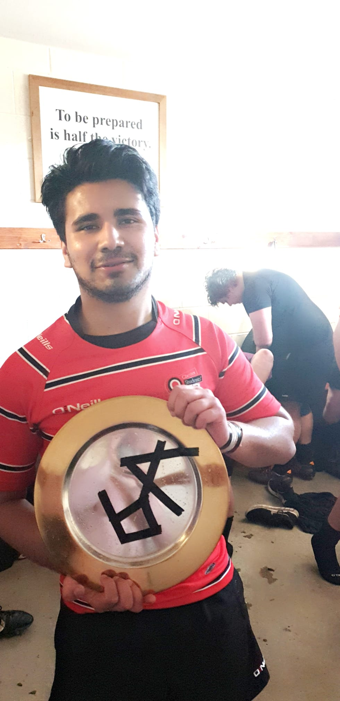

Intro
Languaes & Projects
Education
Know Me Better
Contact Me
Sports

Rugby
I was introducted to rugby during my early years of secondary school by my teachers. During my sixth form,I was given an opportunity to take rugby referring course by my school as a way of thanking me for volunteering to coach younger years. I took this opportunnity and went on to referred some games for London Rugby Referee Society aswell. During my unviersity years, I played for the univeristy team where I turely learned the value of effective communiction.
Hockey
Following the COVID-19 pandenic I began engaging in hockey as a recreational team activity. In just the first year of me playing, I was pleased to receive a sponsorship deal from a startup company named Rival. Currently, I am on my third season playing hockey and have just recevied a sponsorship from Dragon Hockey.
Other Interest and Hobbies
Other Sports:
In addition to sports mentioned above, I also participate in other recreational activities like football and tennis.
Reading:
I am fondly of reading books from the gener of Self-help. I belive these books help us live better life and imporve our problem sloving skills by allowing us to view life from the lense of successful people in any field. My recent read inclue Rich Dad, Poor Dad and Atomic Habits.
Being Creative:
I am passionate about utilizing my free time to engage in creative endeavors and develop new projects. At present, I am working on constructing a model house using popsicle sticks.